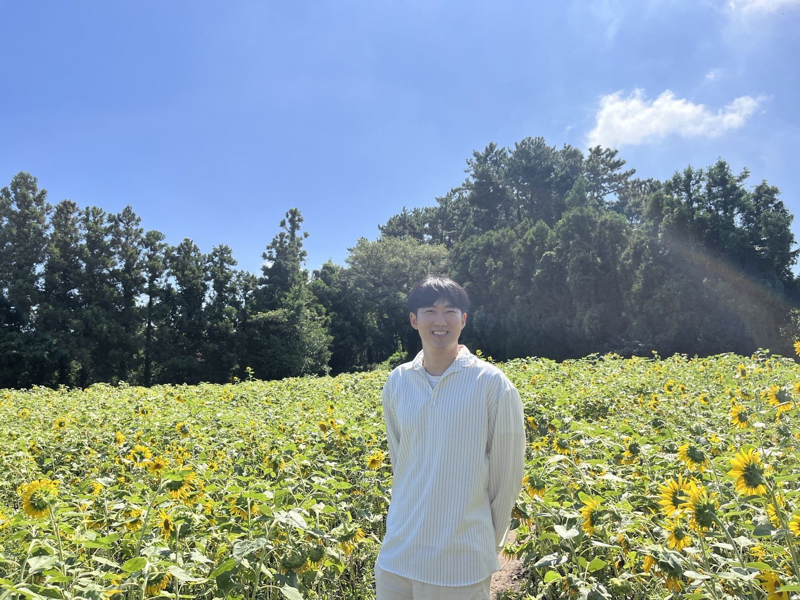

About me
Building for Humanity: Creation Benefits All.
I have a personal motto to create useful things that broadly benefit people.
I believe that the first step in creating something useful is to start small and just make something.
I find happiness in the process of making things myself.
I studied mechanical engineering in university.
My interest in cars and robots led me to an enthusiasm for automated mechanical systems,
and this interest evolved into a curiosity about deep learning.
For a class project during my undergraduate studues,
I worked with a small automated guided vehicle (AGV) model based on an RGB camera and 2D LiDAR.
Designing the driving algorithm,
I saw how effective deep learning could be in handling complex external environments
that are difficult to address with human-based heuristic algorithms.
This experience prompted me to focus on the potential of deep learning models
and pursue graduate studies in artificial intelligence.
In grad school, I worked on projects related to code search and generation,
as well as data creation driven by large language models.
